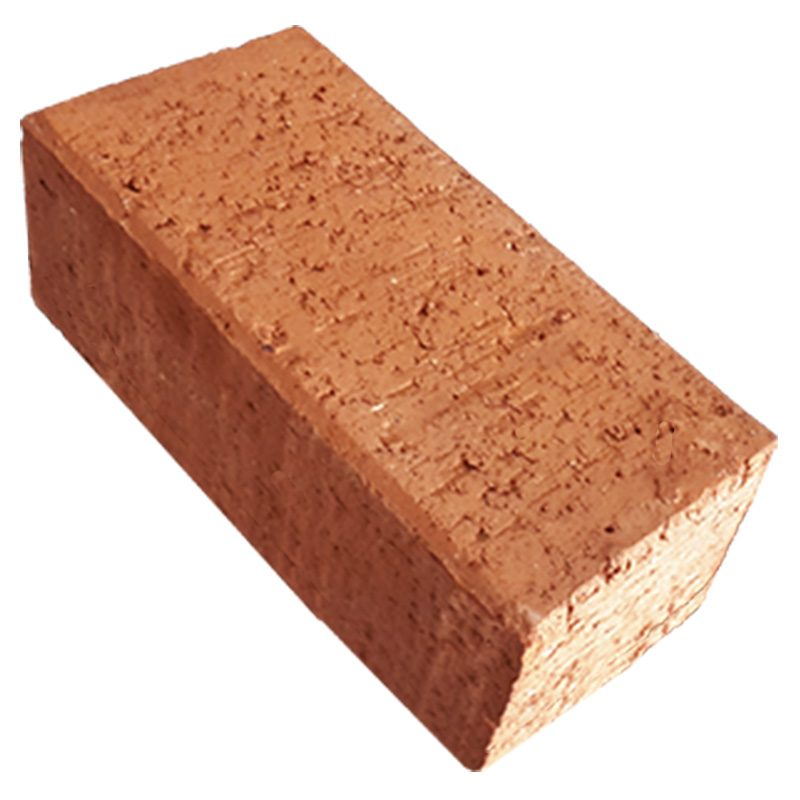
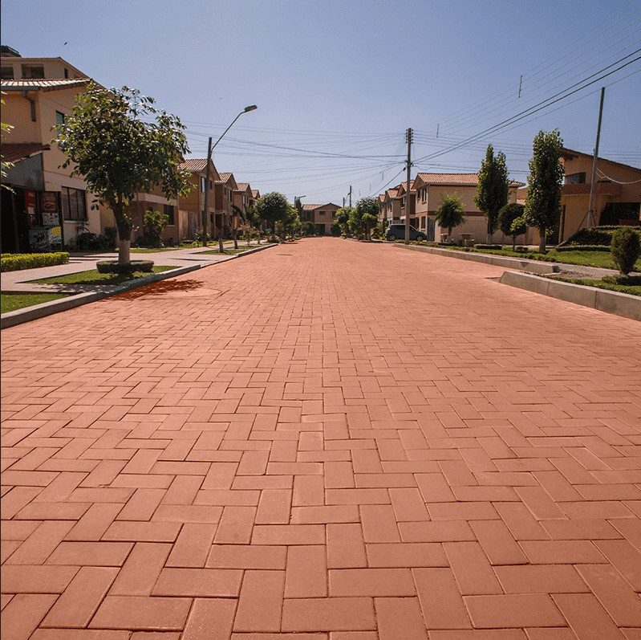
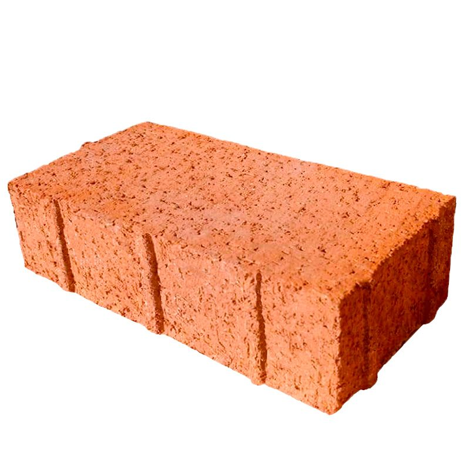
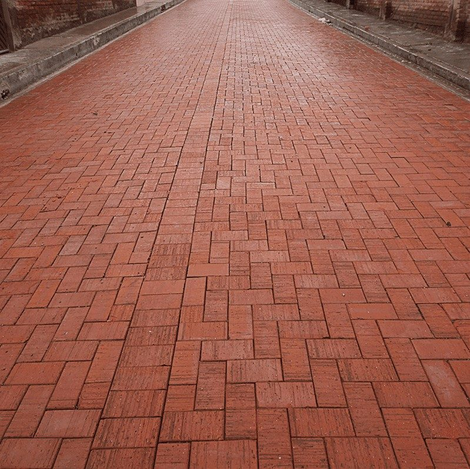

Pisos y pavimentos
PAVIC estándar
Precio con sesión

Calles, plazas, veredas y urbanizaciones. Una marca de INCERPAZ con certificados de calidad, ensayos de laboratorio y certificación ISO.
Urbanizaciones, condominios y proyectos comerciales que necesitan volumen y plazos claros.
Plazas, calles peatonales y espacios públicos, con documentación técnica para licitaciones.
Datos de producto y asesoría para especificar PAVIC en tu diseño.
Cada fábrica publica sus propias medidas y pesos. Elige el catálogo de tu ciudad.





Estima las piezas y el peso para tu proyecto. Para volumen y plazos, el precio final sale por cotización.
La merma cubre cortes y roturas. El resultado es una estimación para pedir tu cotización. Para obras grandes, pide tu cotización con ejecutivo de proyectos.
PAVIC cuenta con certificados de calidad, ensayos de laboratorio y certificación ISO. Solicita la documentación y un ejecutivo te la envía.

Con estos datos un ejecutivo de tu ciudad prepara una cotización por volumen y plazo.
Fabricado en Santa Cruz y Cochabamba, y en nuestra planta de Oruro. Atendemos desde las agencias de Cochabamba, Santa Cruz, Oruro y Sucre, y con un punto de venta especializado en La Paz. Ver agencias